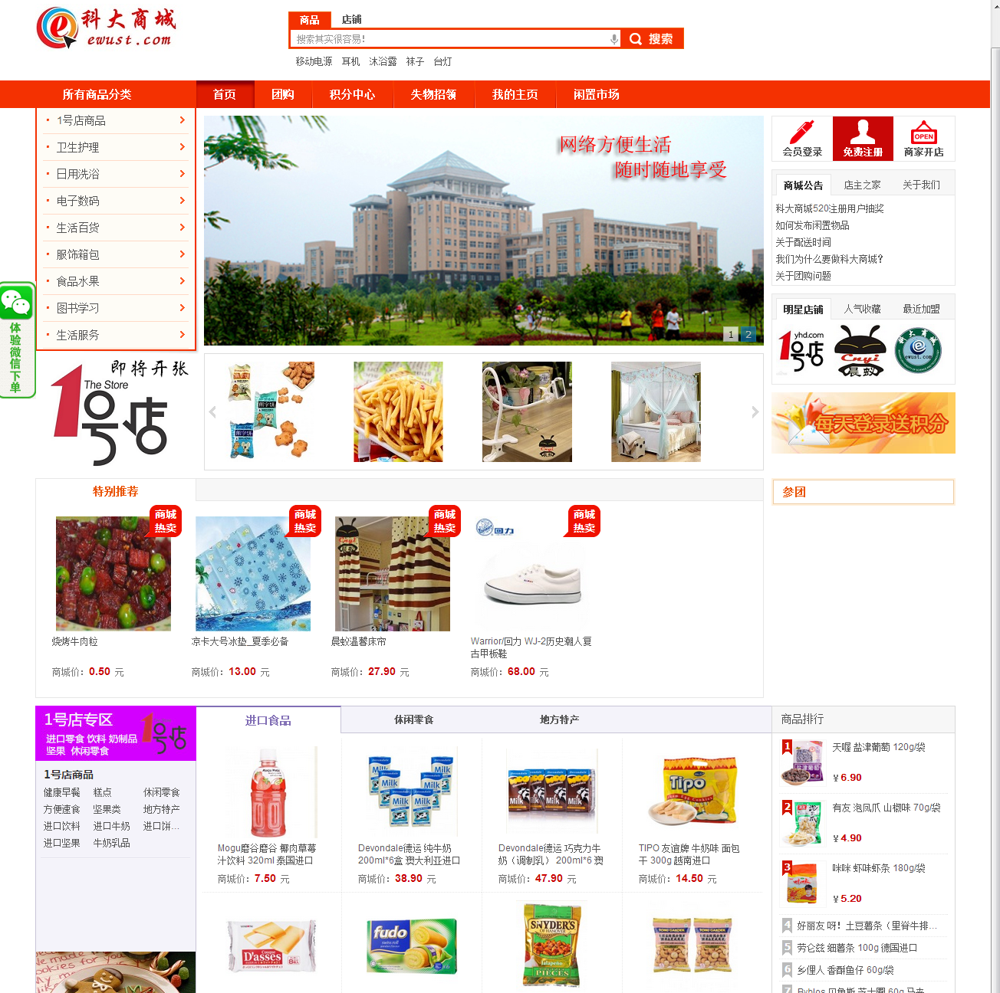

陈 凯
努力成为一名出色的前端开发工程师
人生是一场走不完的旅途。往前走，让世界看到自己的不同专业技能
HTML CSS JavaScript jQuery Sass
requireJS Grunt Gulp BootStrap
性能优化 HTML5 Git CSS3 Java
项目经验
↓
武汉江城时空电子商务公司
2013/10--2014/12联合创始人，2013年，创办武汉江城时空电子商务公司，上线运营。
项目介绍：大学最宝贵的创业经历，与计算机专业学长创办的面向大学生的电子商务商城，这是对面向大学校园电子商务商业模式的一次勇敢尝试。
角色与业绩：创始人之一，负责整个网站的构架。网站累计用户2万余人。取得与1号店武汉分公司的合作。项目获得青山区扶持基金 20000RMB。
GitHub上的个人站点
2014/10--2015/09使用 Jekyll 在 GitHub 上搭建博客，制作博客主题，界面简洁明了，响应式设计。
1、使用了很多 CSS3 属性，具有很棒的交互体验。自己也在坚持写博客。
2、目前这个简洁的主题已被 Jekyll Themes 网站收录。
3、独立搭建个人站点，采用MVC架构，使用Markdown语法发布文章。
博客地址 http://littlewhitechen.github.io/
时代在线电子商务公司
2014/10--2015/05自己制作的电子商务网站，是前端的起步 时空电子商务网站
1、深入学习HTML、CSS、JavaScript相关技术，完成了电子商务网站。
2、个人独立开发的电子商务网站，从前端设计，制作到后台处理。历时一年多。
3、为了熟悉电子商务网站的整个制作流程，以及涉及的各项前沿技术。
详情见请看： GitHub
教育背景
武汉科技大学 管理学院 本科
2013/09--2017/06
主修 电子商务技术方向
2004/09--2017/06
实习经历
海图网 前端开发工程师
2015/07--2015/09
- 工作内容：维护海投网的页面，处理来自用户的反馈需求。
- 团队式开发海投网大学生职业测试项目。团队开发海图网的为郑州一中定制的星光课堂
- 项目业绩：星光课堂在郑州一中上线后，获得师生的好评，改变教学模式。
主要负责前端界面的架构和制作。
实习经历
1号店 前端实习生
2014/7--2016/9
- ✔ 技术分析：参与高校行活动的前端开发。修补活动页面的bug。协助JS工程师，编写基本的UI组件。
- ✔ 工作内容：负责专题页面的制作。后转为JS开发，编写了基础库与UI组件，建立了自己的前端开发项目工具库。
- ✔ 实习业绩：完成7个前端页面的开发，3个组件库，包括轮播图，表单验证，图片裁剪工具，使用了H5，CSS3的技术。
证书
- CET-6,优秀的听说写能力
- 电子商务师
其他
- 2013.10创立时代电子商务网站
- 2014.4武汉科技大学创业班毕业
More
往前走，让世界看到自己的不同
主要兴趣集中在前端开发，大前端的概念深入我心。将更多的业务逻辑放在前端中，这很有趣。同时，将自己构想的内容实现出来，这种感觉很愉快。
热爱互联网 / 热爱前端开发 / 产品控 对移动软件开发和探索未知领域有浓厚的兴趣 / 有强烈的探索精神 / 关注新技术/乐于挑战 / 善于和不同的人团队式合作开发
篮球 / 登山 / 手工/ 电影 / 音乐 / 足球 / 演讲